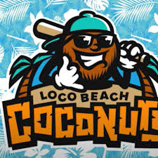

The Loco Beach Coconuts Ride into the League
The **Loco Beach Coconuts** were announced as a new Banana Ball team in October 2025, bringing their "sun, surf, and sand" vibe to the league for the inaugural Banana Ball Championship League season in 2026. As one of the league's newest franchises, the Coconuts will compete against the Savannah Bananas, Party Animals, Firefighters, Texas Tailgaters, and fellow expansion team, the Indianapolis Clowns.
Coaching and Roster
The Coconuts will be led by **Head Coach Mark Crocco**, a seasoned coach who previously led the Erskine College baseball program to over 225 wins. Crocco joined Banana Ball in 2025 as the Head Coach of the Visitors, the league's developmental team, before taking the helm of the Coconuts.
The team also boasts a new "Primetime Coach" position, designed for high-profile figures to manage the biggest games. For the Coconuts, that coach is two-time World Series champion and former MLB All-Star **Shane Victorino**, famously known as "The Flyin' Hawaiian".
Notable 2026 Season Appearances
The Coconuts are set to make waves with a number of high-profile appearances during the 2026 World Tour, focusing on coastal cities to match their brand.
Key Tour Stops:
- **May 29-30:** The Coconuts will play at the ESPN Wide World of Sports Complex at Walt Disney World in Orlando, Florida.
- **August 28-29:** The Coconuts will face the Savannah Bananas at Gillette Stadium in Foxborough, MA.
- **June 6-7:** The team will head to American Family Field in Milwaukee to take on the Party Animals.
The "Loco Beach" Vibe
According to designer Dan Simon, the "Loco Beach" identity is more of a state of mind than a geographical location, embodying the chill, fun-loving spirit of sun, surf, and sand. The team's brand features a funky coconut character flashing a "hang loose" sign, bringing a distinctly tropical and laid-back feel to the fast-paced, high-energy world of Banana Ball.